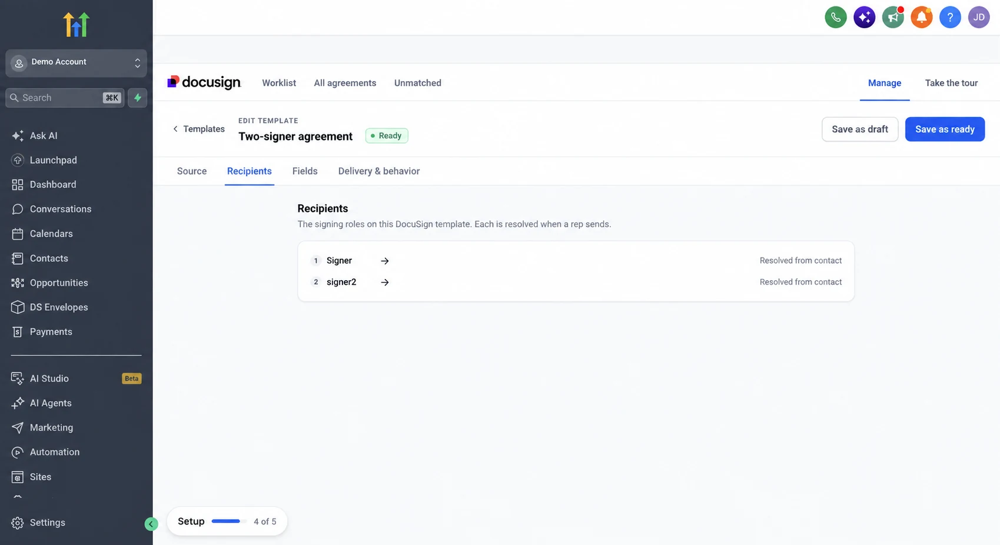
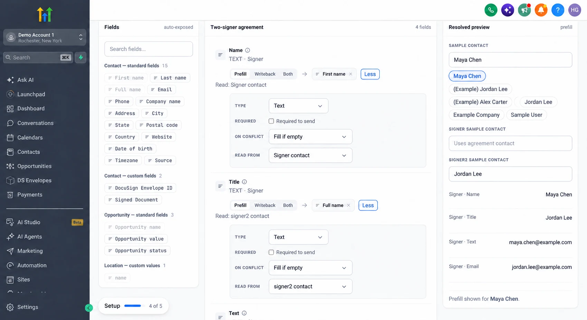
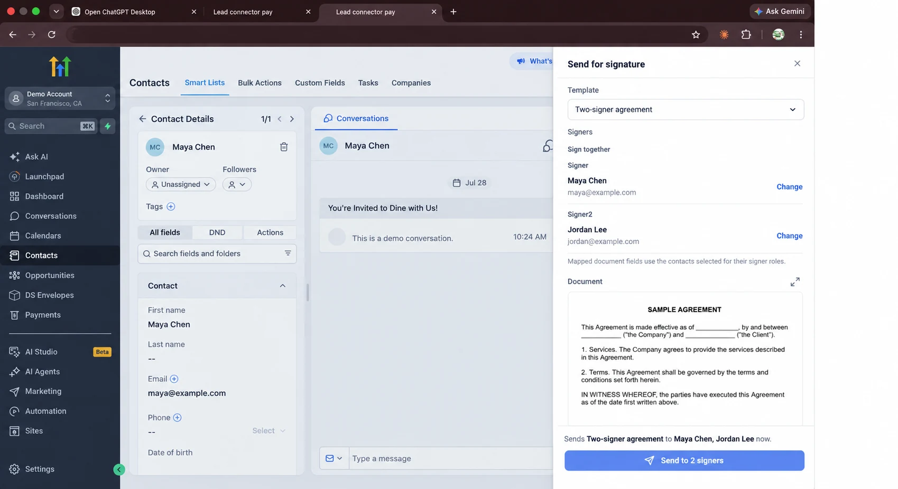
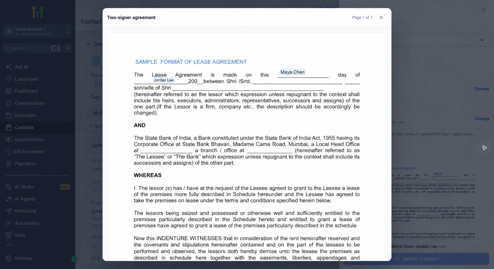

Browse docs and guides
Send one document to multiple signers
With Docusign by LC Bridge, a document can have more than one signer. Select a GoHighLevel contact for each signer role, then choose which contact supplies each mapped document value.
The screenshots below are edited examples of the product interface. Contact details and the template name have been replaced.
1. Prepare the DocuSign template
Add a recipient role for each person who must sign. If both contacts need their own values printed in the document, add a separate document field for each value. The role names in your template appear in Docusign by LC Bridge when you configure and send it.
- In DocuSign, create or open the template.
- Add the recipient roles, such as Signer and signer2, and place the fields they need.
- In GoHighLevel, open Docusign → Manage → Templates, enable the template, and inspect the Recipients tab.

Signing order: The send sheet shows “Sign together” when the template has parallel recipients. Set the actual routing order in the DocuSign template.
2. Map document fields to the right contacts
Open the template’s Fields tab. For each document field, select its GoHighLevel contact field, then use Read from to choose which signer’s selected contact supplies the value. On templates with multiple signers, the extra controls open by default.
In this example, the Name field reads the first contact’s First name, while the Title field reads the second contact’s Full name. Each field can use a different source contact:

- On a document field, click Map field and choose a GoHighLevel property such as Full name, Email, or a custom contact field.
- Set Read from to the signer role whose contact holds that property.
- Repeat for other fields, use the Resolved preview with sample contacts to check values, then click Save as ready.
One field, one source: A document field reads from one selected contact. To display both contacts’ names, place two document fields and map each one separately.
3. Select contacts, preview, and send
- Open the first contact in GoHighLevel and choose Send for signature.
- Pick the ready template. The send sheet lists every required signer role.
- For each role, click Select contact or Change and choose the correct GoHighLevel contact. Name and email come from the selected contact.
- Review the document preview to confirm values from both contacts appear in the intended fields. Then send.


If you change a mapping while a send sheet is already open, close and reopen that sheet to load the newly saved template version.
Write completed values to the right contact
For a field that should update GoHighLevel after signing, choose Writeback or Both, map it to a writable contact field, and set Write to to the matching signer role. On completion, the mapped value is written to that role’s selected contact. Choose Both when the field should prefill from a contact and write its completed value back.
Check the target: “Read from” controls prefill. “Write to” controls which contact receives the completed value. Review both when multiple contacts are involved.
Troubleshooting
| What you see | What to check |
|---|---|
| A second role is missing | Confirm the DocuSign template has a second recipient role, then reopen the template in Docusign by LC Bridge and check its Recipients tab. |
| A field is blank in preview | Check its GoHighLevel field, its “Read from” role, and that the selected contact has a value for that property. Save the template and reopen the send sheet. |
| A value comes from the wrong contact | Inspect the field’s “Read from” role and the contact selected for that role in the send sheet. |
| Completed data updates the wrong contact | Inspect the field’s “Write to” role and confirm its mapping is set to Writeback or Both. |
| Send is disabled | Choose a valid contact for every required signer role and review any contact email validation shown in GoHighLevel. |
Ready to test: Use a non-sensitive demo template, select two test contacts, and confirm both values in the preview before sending.
Need help with the first setup? Contact LC Bridge support or return to the documentation index.